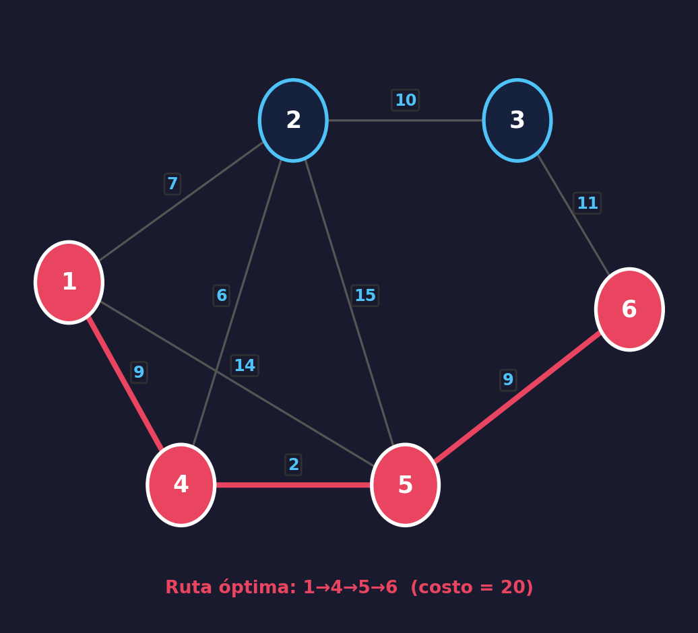
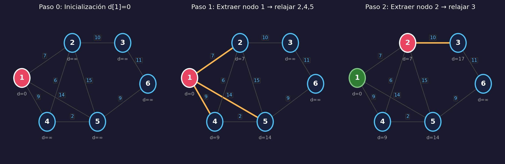
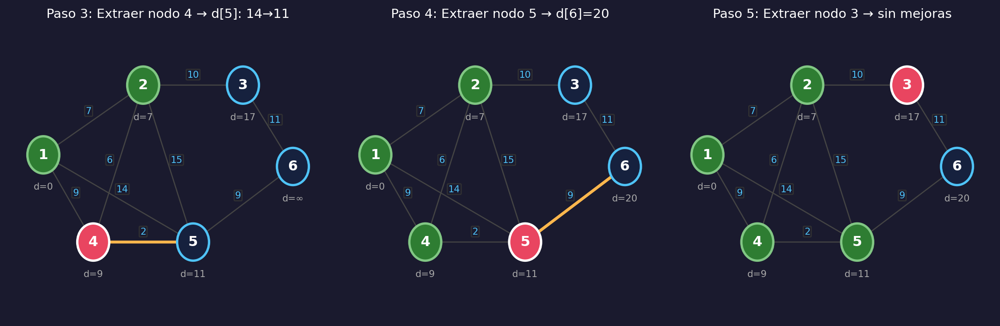
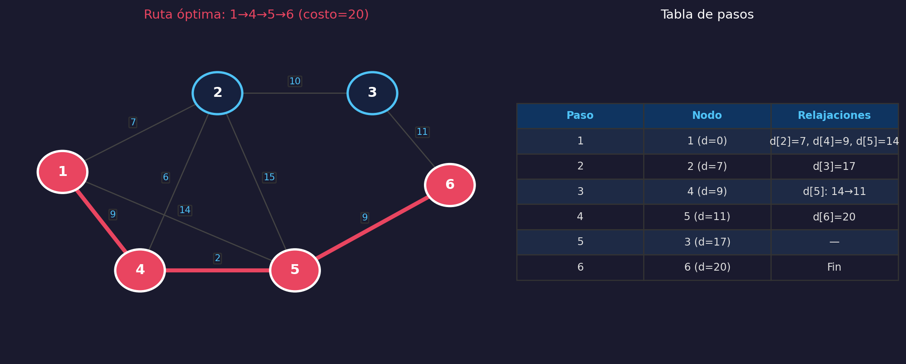
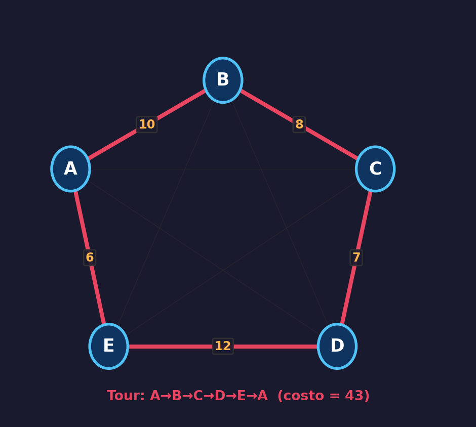
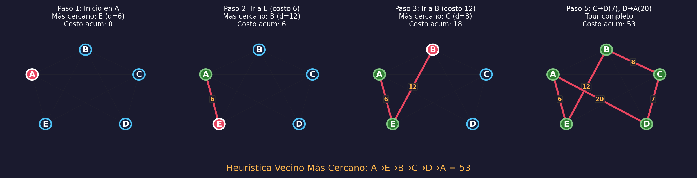
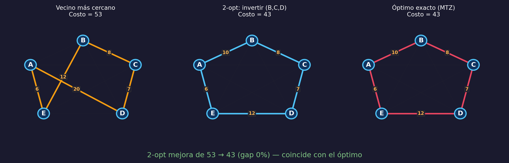
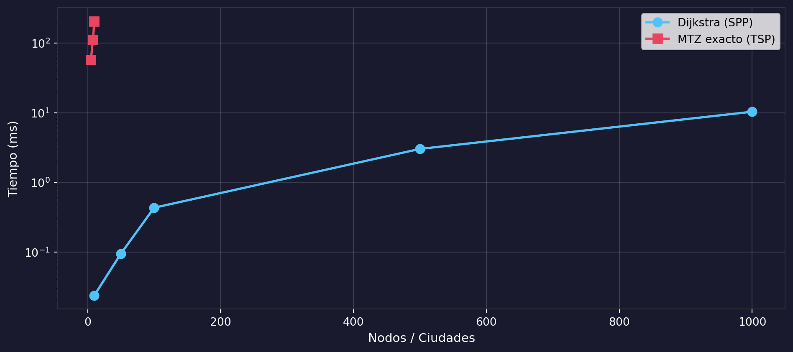
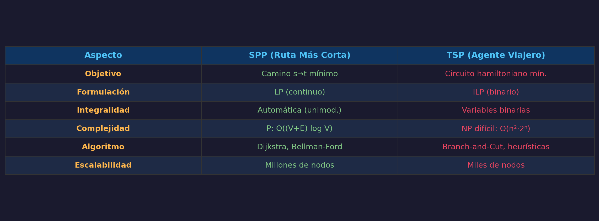

Ruta Más Corta y Agente Viajero — Parte II
Escuela Politécnica Nacional
2026-11-01
Dado un grafo dirigido \(G = (V, A)\) con costos \(c_{ij} \geq 0\), un origen \(s\) y un destino \(t\) [1], [2]:
Encontrar el camino dirigido de \(s\) a \(t\) de costo total mínimo.
Aplicaciones

\[\min \sum_{(i,j) \in A} c_{ij}\, x_{ij}\]
Restricciones de conservación de flujo:
\[\sum_{j:(i,j)\in A} x_{ij} - \sum_{j:(j,i)\in A} x_{ji} = \begin{cases} 1 & i = s \\ -1 & i = t \\ 0 & \text{otro caso} \end{cases}\]
Pseudocódigo:
import heapq
def dijkstra(graph, source):
dist = {n: float('inf') for n in graph}
prev = {n: None for n in graph}
dist[source] = 0
heap = [(0, source)]
visited = set()
while heap:
d_u, u = heapq.heappop(heap)
if u in visited: continue
visited.add(u)
for v, w in graph[u]:
if v not in visited and d_u + w < dist[v]:
dist[v] = d_u + w
prev[v] = u
heapq.heappush(heap, (dist[v], v))
return dist, prevgraph = {1:[(2,7),(4,9),(5,14)], 2:[(3,10),(5,15)],
3:[(6,11)], 4:[(2,6),(5,2)], 5:[(6,9)], 6:[]}
dist, prev = dijkstra(graph, 1)
path = []
n = 6
while n: path.append(n); n = prev[n]
path.reverse()
print('=== Dijkstra: nodo 1 → nodo 6 ===')
print(f'Ruta: {" → ".join(map(str, path))}')
print(f'Costo: {dist[6]}')
print()
for node in sorted(dist):
print(f' d[{node}] = {dist[node]}')=== Dijkstra: nodo 1 → nodo 6 ===
Ruta: 1 → 4 → 5 → 6
Costo: 20
d[1] = 0
d[2] = 7
d[3] = 17
d[4] = 9
d[5] = 11
d[6] = 20


from pulp import LpProblem, LpMinimize, LpVariable, LpContinuous, lpSum, value
prob = LpProblem('SPP', LpMinimize)
arcs = [(1,2,7),(1,4,9),(1,5,14),(2,3,10),(2,5,15),
(3,6,11),(4,2,6),(4,5,2),(5,6,9)]
x = {(u,v): LpVariable(f'x_{u}_{v}', 0, cat=LpContinuous) for u,v,_ in arcs}
prob += lpSum(w*x[(u,v)] for u,v,w in arcs)
nodes_all = {1,2,3,4,5,6}
for i in nodes_all:
out = lpSum(x[(u,v)] for u,v,_ in arcs if u==i)
inp = lpSum(x[(u,v)] for u,v,_ in arcs if v==i)
if i==1: prob += out - inp == 1
elif i==6: prob += out - inp == -1
else: prob += out - inp == 0
prob.solve()
print(f'LP costo óptimo: {value(prob.objective):.0f}')
print('Arcos activos:')
for (u,v), var in x.items():
if var.varValue and var.varValue > 0.5:
print(f' {u} → {v}')
print(f'\nCoincide con Dijkstra: costo = {dist[6]}')LP costo óptimo: 20
Arcos activos:
1 → 4
4 → 5
5 → 6
Coincide con Dijkstra: costo = 20Dado un grafo completo con \(n\) nodos y costos \(c_{ij}\):
Encontrar un circuito hamiltoniano de costo mínimo (visita cada nodo exactamente una vez) [7].
Tours posibles:
Primer abordaje computacional: [8] (49 ciudades).

\[\min \sum_{i=1}^{n}\sum_{\substack{j=1\\j\neq i}}^{n} c_{ij}\,x_{ij}\]
Restricciones de grado (salir/entrar exactamente una vez): \[\sum_{\substack{j=1\\j\neq i}}^{n} x_{ij} = 1 \;\forall\,i \qquad \sum_{\substack{i=1\\i\neq j}}^{n} x_{ij} = 1 \;\forall\,j\]
Eliminación de subtours (MTZ): \[u_i - u_j + n\,x_{ij} \leq n-1 \quad \forall\,i,j = 2,\ldots,n,\; i \neq j\]
Variables: \(x_{ij} \in \{0,1\}\), \(\;1 \leq u_i \leq n-1\) — Requiere ILP [10]
Consecuencia
Se resuelve como LP estándar, sin necesidad de branch-and-bound.
from pulp import LpMaximize, LpBinary, LpStatus
dm = np.array([[0,10,15,20,6],[10,0,8,18,12],
[15,8,0,7,14],[20,18,7,0,12],[6,12,14,12,0]])
cities_l = ['A','B','C','D','E']; nc = 5
prob = LpProblem('TSP', LpMinimize)
xv = {(i,j): LpVariable(f't_{i}_{j}', cat=LpBinary)
for i in range(nc) for j in range(nc) if i!=j}
uv = {i: LpVariable(f'u_{i}', 1, nc-1) for i in range(1,nc)}
prob += lpSum(dm[i][j]*xv[i,j] for i in range(nc) for j in range(nc) if i!=j)
for i in range(nc):
prob += lpSum(xv[i,j] for j in range(nc) if j!=i) == 1
prob += lpSum(xv[j,i] for j in range(nc) if j!=i) == 1
for i in range(1,nc):
for j in range(1,nc):
if i!=j: prob += uv[i]-uv[j]+nc*xv[i,j] <= nc-1
prob.solve()1tour_r = [0]; cur = 0
for _ in range(nc-1):
for j in range(nc):
if j!=cur and (cur,j) in xv and xv[cur,j].varValue > 0.5:
tour_r.append(j); cur = j; break
tour_r.append(0)
cost = value(prob.objective)
names = [cities_l[i] for i in tour_r]
print(f'Tour óptimo: {" → ".join(names)}')
print(f'Costo: {int(cost)}')Tour óptimo: A → B → C → D → E → A
Costo: 43Verificación por enumeración exhaustiva:
import itertools
def tour_cost(t, d):
return sum(d[t[i]][t[i+1]] for i in range(len(t)-1))
all_t = [[0]+list(p)+[0] for p in itertools.permutations(range(1,nc))]
costs = sorted([(tour_cost(t,dm), t) for t in all_t])
print(f'Total tours: {len(all_t)} ({len(all_t)//2} únicos)')
print(f'Óptimo confirmado: costo = {costs[0][0]}')
print(f'Peor tour: costo = {costs[-1][0]}')Total tours: 24 (12 únicos)
Óptimo confirmado: costo = 43
Peor tour: costo = 79

def nn_tsp(dm, start=0):
n = len(dm); vis = {start}; tour = [start]; cur = start; cost = 0
while len(vis) < n:
best = min((j for j in range(n) if j not in vis), key=lambda j: dm[cur][j])
cost += dm[cur][best]; vis.add(best); tour.append(best); cur = best
cost += dm[cur][start]; tour.append(start)
return tour, cost
def two_opt(tour, dm):
n = len(tour)-1; improved = True; best = list(tour)
while improved:
improved = False
for i in range(1, n-1):
for j in range(i+1, n):
new = best[:i]+best[i:j+1][::-1]+best[j+1:]
if tour_cost(new, dm) < tour_cost(best, dm):
best = new; improved = True
return best, tour_cost(best, dm)
t_nn, c_nn = nn_tsp(dm)
t_2opt, c_2opt = two_opt(t_nn, dm)
print(f'Vecino más cercano: {" → ".join(cities_l[i] for i in t_nn)} = {c_nn}')
print(f'Después de 2-opt: {" → ".join(cities_l[i] for i in t_2opt)} = {c_2opt}')
print(f'Óptimo exacto: {int(cost)}')
print(f'Gap NN: {(c_nn-cost)/cost*100:.1f}% | Gap 2-opt: {(c_2opt-cost)/cost*100:.1f}%')Vecino más cercano: A → E → B → C → D → A = 53
Después de 2-opt: A → E → D → C → B → A = 43
Óptimo exacto: 43
Gap NN: 23.3% | Gap 2-opt: 0.0%import time
sizes_spp = [10, 50, 100, 500, 1000]
times_spp = []
for n_s in sizes_spp:
adj = {i:[] for i in range(n_s)}
rng = np.random.default_rng(42)
for i in range(n_s-1):
adj[i].append((i+1, int(rng.integers(1,20))))
for i in range(n_s):
for j in range(n_s):
if i!=j and j!=i+1 and rng.random()<0.1:
adj[i].append((j, int(rng.integers(1,20))))
t0 = time.perf_counter()
dijkstra(adj, 0)
times_spp.append(time.perf_counter()-t0)
from pulp import PULP_CBC_CMD
sizes_tsp = [5, 8, 10]
times_tsp = []
for n_t in sizes_tsp:
coords = np.random.default_rng(42).random((n_t,2))*100
d = np.zeros((n_t,n_t))
for i in range(n_t):
for j in range(n_t):
d[i][j] = np.sqrt((coords[i][0]-coords[j][0])**2+(coords[i][1]-coords[j][1])**2)
t0 = time.perf_counter()
p = LpProblem(f'T{n_t}', LpMinimize)
xv2 = {(i,j):LpVariable(f'z{n_t}_{i}_{j}',cat=LpBinary) for i in range(n_t) for j in range(n_t) if i!=j}
uv2 = {i:LpVariable(f'w{n_t}_{i}',1,n_t-1) for i in range(1,n_t)}
p += lpSum(d[i][j]*xv2[i,j] for i in range(n_t) for j in range(n_t) if i!=j)
for i in range(n_t):
p += lpSum(xv2[i,j] for j in range(n_t) if j!=i)==1
p += lpSum(xv2[j,i] for j in range(n_t) if j!=i)==1
for i in range(1,n_t):
for j in range(1,n_t):
if i!=j: p += uv2[i]-uv2[j]+n_t*xv2[i,j]<=n_t-1
p.solve(PULP_CBC_CMD(msg=0))
times_tsp.append(time.perf_counter()-t0)
fig, ax = plt.subplots(figsize=(10, 4.5))
fig.set_facecolor('#1a1a2e')
ax.set_facecolor('#1a1a2e')
ax.semilogy(sizes_spp, [t*1000 for t in times_spp], 'o-',
color='#4fc3f7', lw=2, markersize=8, label='Dijkstra (SPP)')
ax.semilogy(sizes_tsp, [t*1000 for t in times_tsp], 's-',
color='#e94560', lw=2, markersize=8, label='MTZ exacto (TSP)')
ax.set_xlabel('Nodos / Ciudades', color='white', fontsize=11)
ax.set_ylabel('Tiempo (ms)', color='white', fontsize=11)
ax.tick_params(colors='white')
for sp in ax.spines.values(): sp.set_color('#333')
ax.grid(alpha=0.15, color='white')
ax.legend(fontsize=10)
plt.tight_layout()
plt.show()

Gracias
Optimización Combinatoria: SPP y TSP — Parte II
Tópicos Especiales 1 · Doctorado en Informática
Escuela Politécnica Nacional · 2026
Tópicos Especiales 1 — Optimización Combinatoria